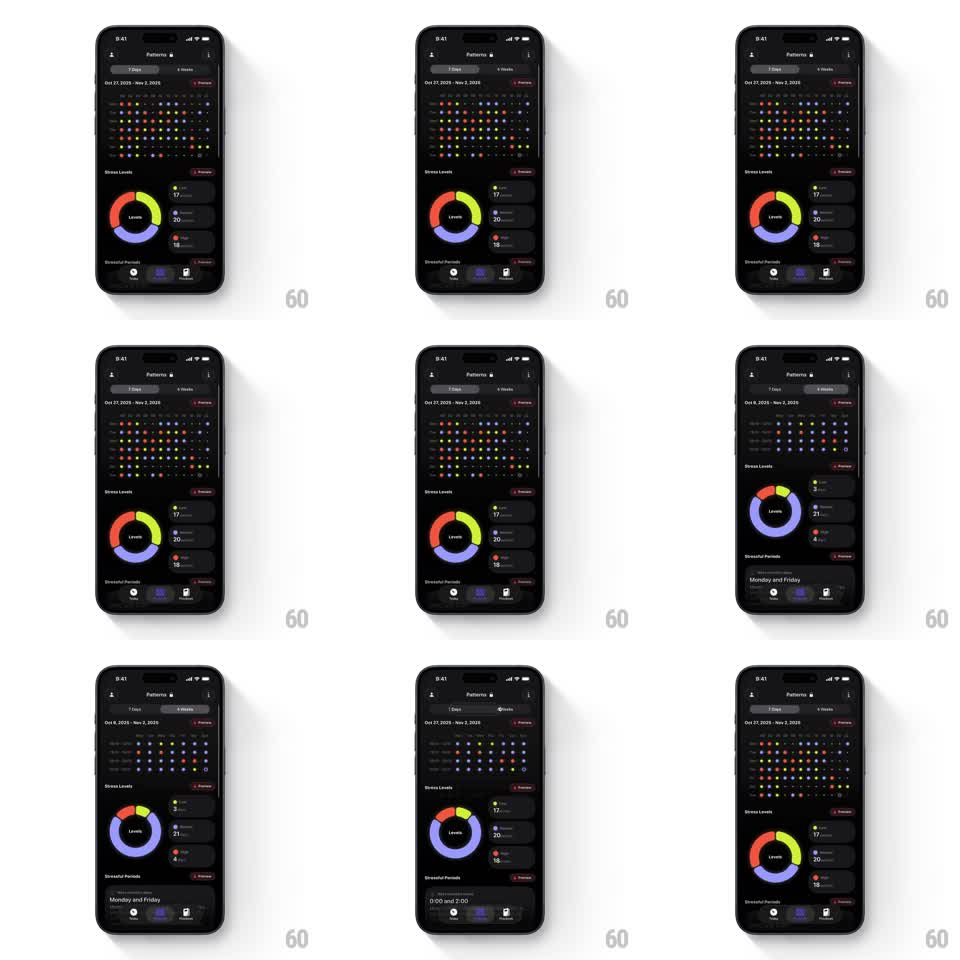

Media
Frame-by-frame

Rebuild this interaction 1:1: Harvee's Patterns screen - switching between "7 Days" and "4 Weeks" tabs morphs the dot-matrix history grid, re-animates the Stress Levels donut chart, and updates the Stressful Periods card with new timeframe data.

Rebuild this interaction 1:1: Harvee's Patterns screen - switching between "7 Days" and "4 Weeks" tabs morphs the dot-matrix history grid, re-animates the Stress Levels donut chart, and updates the Stressful Periods card with new timeframe data. ## Integration Integration: stack-agnostic spec - springs given as stiffness/damping, timed motions as duration + curve; map every value to your framework and animation library of choice. ## Scene Dark analytics screen: "Patterns" header, a segmented control (7 Days | 4 Weeks) with the date range beneath, a dot-matrix grid (rows of small colored dots - one per logged entry), a "Stress Levels" section with a rainbow donut chart and legend rows (counts per level), a "Stressful Periods" card with a day/time summary, and a bottom tab bar. ## Motion spec Pattern: timeframe switch with chart morphs, ~600ms. - Tab: the segmented indicator slides to the new tab (spring ~380/24); the date range label cross-fades (150ms). - Dot grid: dots scale down and out (150ms) while the new timeframe's dots scale in with a wave stagger (row by row, 30ms per row, spring ~420/20); colors map to the new data. - Donut: the chart's arcs animate to the new values - segments sweep clockwise to their new angles (500ms, ease-in-out) while legend counts count up (400ms). - Stressful Periods: the summary text cross-fades to the new pattern (200ms) and the card does a subtle lift (translateY 4px -> 0). ## Calibration - The donut morphs from current values - never resets to zero between tabs. - The dot grid wave reads top-to-bottom; a random sparkle order looks noisy. ## Reduced motion All three modules cross-fade to the new timeframe's state (200ms). ## Don't miss - The donut keeps its rainbow segment language (green through red) across timeframes. - The segmented control, header, and tab bar stay fixed - only data modules animate.